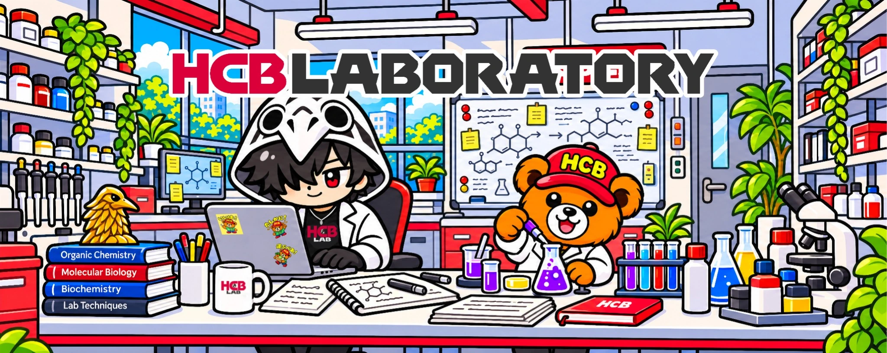
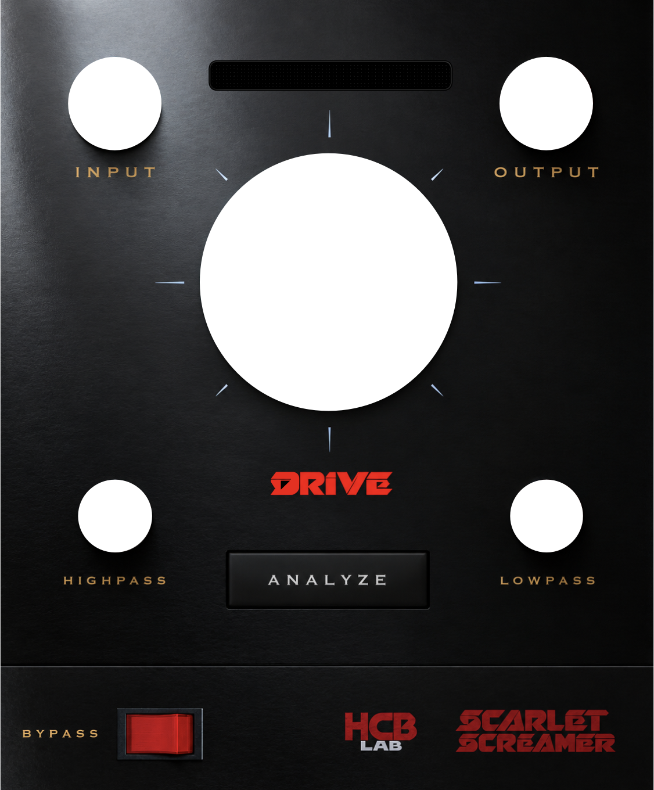
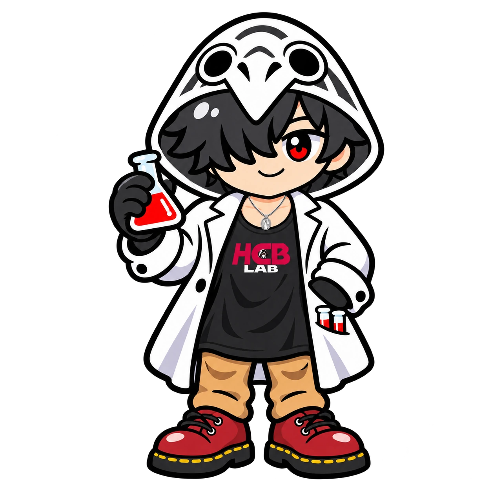
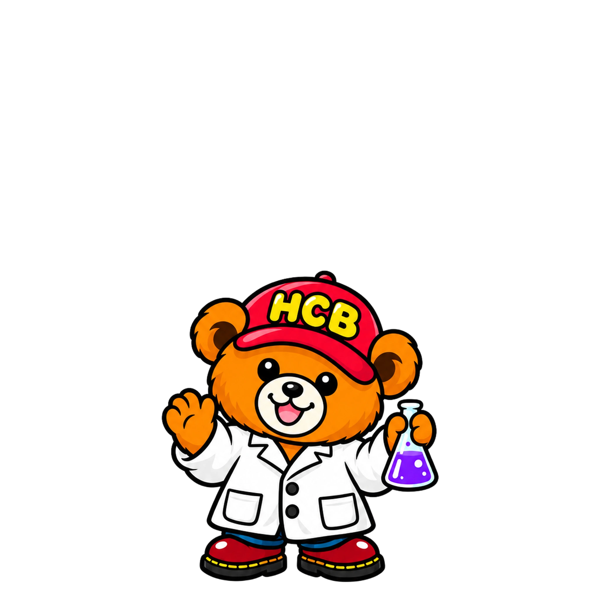

想いを、
言葉に。
想言筆記体 言葉に。
RESEARCH 001 日本語フォントの研究
想言筆記体
日本語の手書きの温度を、フォントに宿す。
すっと読めて、ふっと心に残る。
自然な線の流れと、やわらかな表情を探求した日本語フォント。いつもの言葉に、あなたらしいぬくもりを添えます。

文字にも、音にも、
ひょんなキッカケから研究は始まります。想像をおそれずカタチにする勇気。手を動かし、耳を澄ませ、ときには寄り道も。ここは、創作を育てる研究所です。
DIRECTOR : Sola ❖ ASSISTANT : ハコブベア
01 / RESEARCH OUTPUT
度重なる実験において一定の水準をクリアしたものだけが実際に製品となります。
それぞれの紹介ページで、触れてみてください。
RESEARCH 001 日本語フォントの研究
日本語の手書きの温度を、フォントに宿す。
すっと読めて、ふっと心に残る。
自然な線の流れと、やわらかな表情を探求した日本語フォント。いつもの言葉に、あなたらしいぬくもりを添えます。

GUITAR AMP PLUGINRESEARCH 002 音の研究
ひとつの歪みから、自分の音へ。
DTMにおけるギターの音作りの迷いを断ち切る。これ一つ挿すだけで、ファンクからメタルまで対応できる超簡単ギターアンププラグイン。DI入力を解析し様々な歪みを得られます。
開発中・近日公開
02 / MEET THE LAB
所長と、小さな助手。
ふたりの研究は、今日も続きます。

hcb laboratory 研究所所長
デザイン、音楽制作をはじめとした創作活動が、イルー・カーディス島長から気に入られ「君の未来を見てみたい」と研究所をプレゼントされた。島長の名刺を作成したり、島長宅のサーバー構築などをしているうちに、いつの間にか現在は飲み友化している。

hcb laboratory 研究助手
HCBラボラトリーがあるイルーカーディス島沿岸で衰弱していたところを所長に保護された子グマ。現在は3歳になり、運送業の傍ら、研究所の助手としても活躍している。また、リズム感が良くドラムが特技。所長のバンドメンバーでもある。
CURIOSITY IS OUR STARTING POINT.
想像をカタチに、想像の上を
この研究所から。